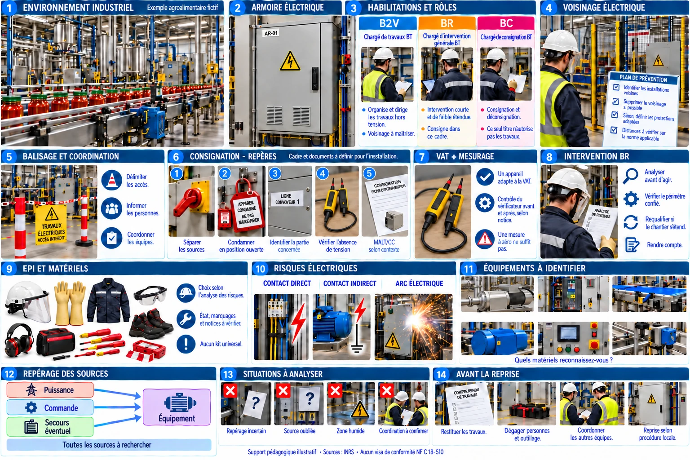
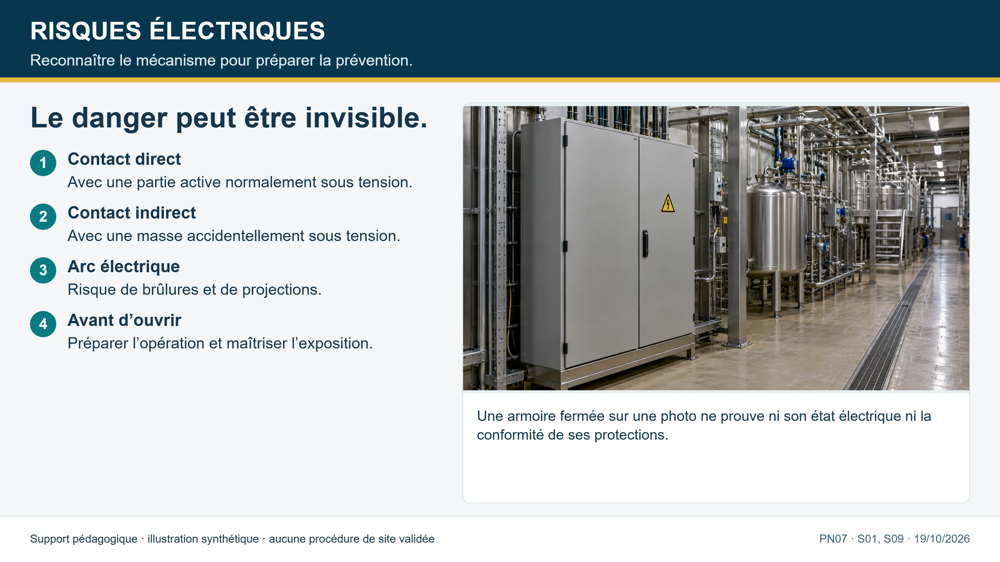
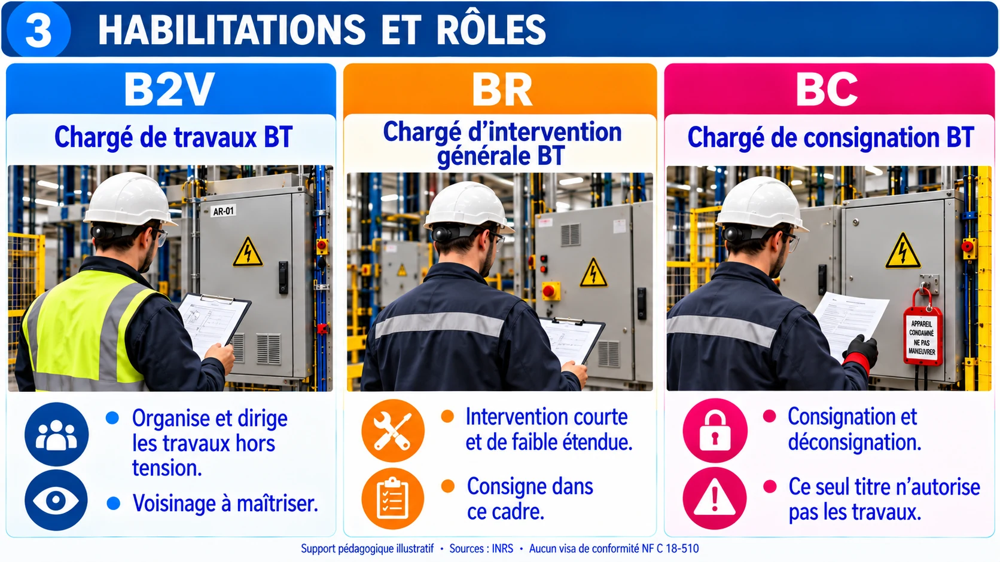
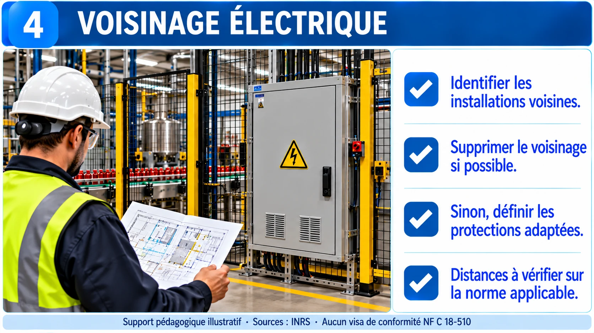
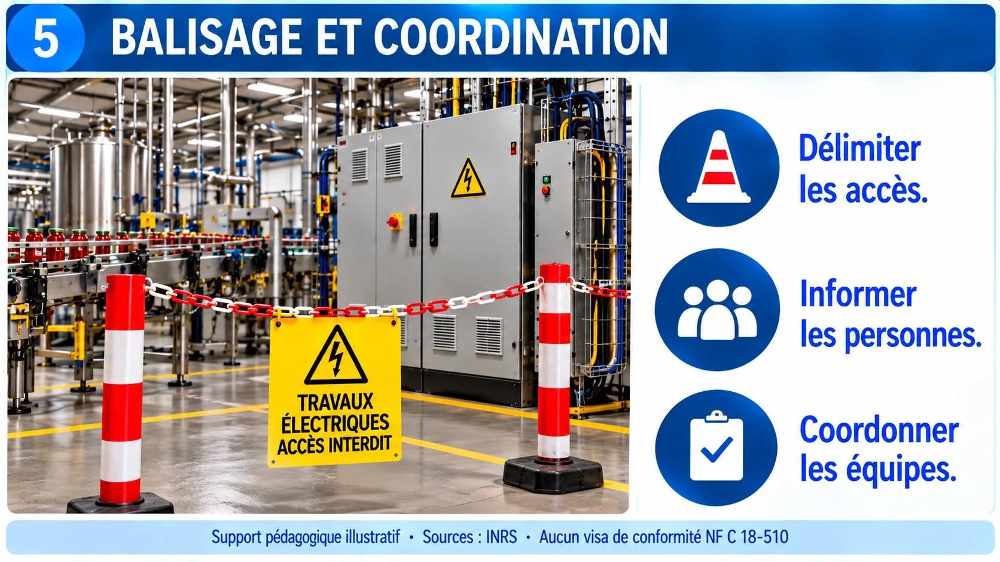
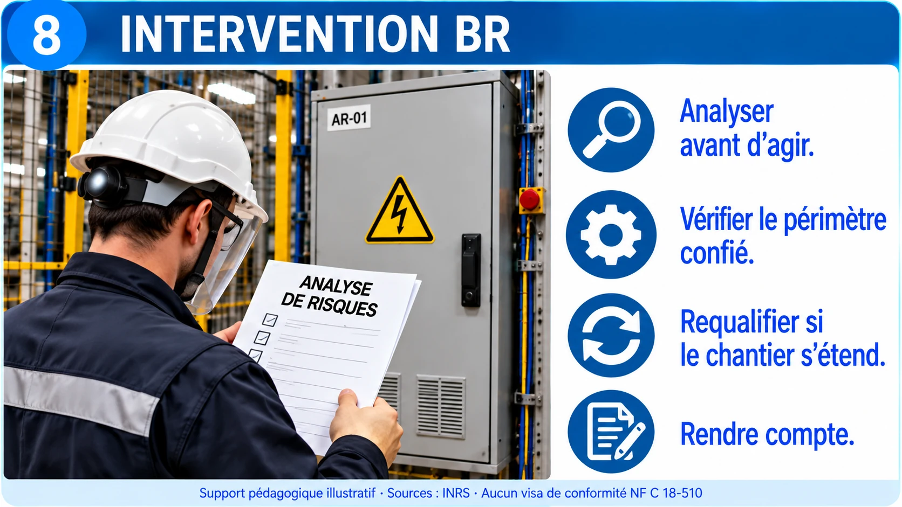
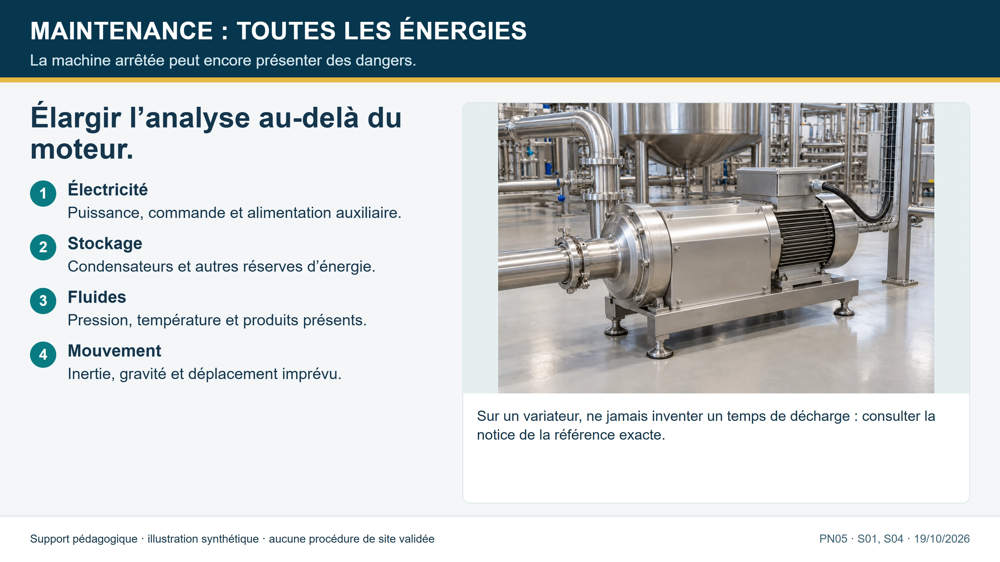
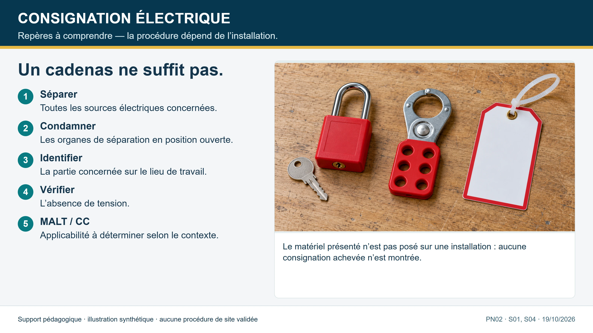
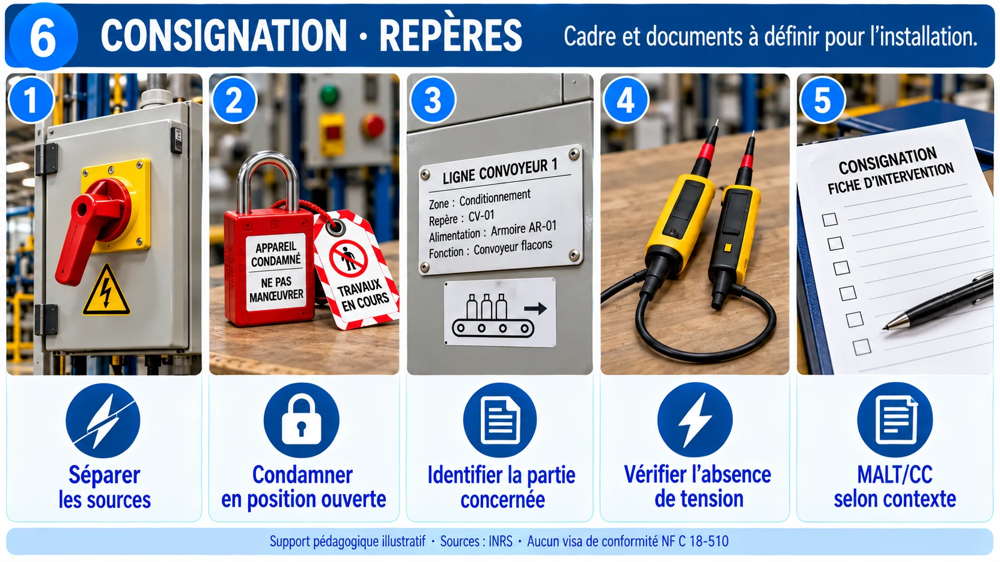

LIVRET DU PARTICIPANT · RECYCLAGE A260BNA
Habilitation électrique
Recyclage H0V · B2V · BR · BC
Vendredi 30 octobre 2026 · site Panzani, Marseille · 09:00–12:00 et 13:30–17:00
Animation : Benoît Deflandre, RMBD Risk Management

COMMENT UTILISER CE LIVRET
Le recyclage en un coup d’œil
Programme de la journée
| Horaire | Séquence |
|---|---|
| 09:00–09:20 | Accueil, titre actuel |
| 09:20–10:00 | S1 Repères |
| 10:00–10:30 | S2 Symboles et titre |
| 10:30–12:00 | S3 Voisinage : H0V et B2V |
| 12:00–13:30 | Pause déjeuner |
| 13:30–15:00 | S4 BR : intervention BT |
| 15:00–16:15 | S5 BC : consignation |
| 16:15–17:00 | Évaluation, retour pratique, bilan |
Mode d’emploi
- Lisez la fiche de la séquence avant ou après l’animation : elle reprend l’essentiel, avec sources.
- Les cas métiers se travaillent à l’oral : notez vos réponses, puis comparez au corrigé.
- Les encadrés « Sur mon site » sont à remplir avec vos installations réelles.
- Les pages à imprimer (A4) : bouton en haut de page.
Votre niveau, en quatre lignes
| Niveau | Ce que le symbole couvre | Ce qu’il ne couvre pas | Avant d’agir |
|---|---|---|---|
| H0V | Non-électricien en HT : opérations d’ordre non électrique, y compris en voisinage renforcé HT (zone 2). Le titre précise « Exécutant » ou « Chargé de chantier ». | Toute opération d’ordre électrique. | Faire préciser la zone et l’accès ; surveillance de sécurité électrique selon l’opération. |
| B2V | Chargé de travaux d’ordre électrique en BT, hors tension ou au voisinage. Il prépare l’opération, délimite la zone, donne les consignes, assure la sécurité de son équipe. | Travaux sous tension (symbole T). Consignation d’un travail : confiée à un BC (HC en HT), sauf titre le prévoyant. | Consignation attestée, autorisation de travail, titre de chaque membre de l’équipe vérifié. |
| BR | Chargé d’intervention BT générale : entretien et dépannage (recherche de panne, remplacement, mise en service partielle et temporaire, connexion et déconnexion). Connexion sous tension : 500 V et 63 A en alternatif, hors charge au plus. Consignation pour son propre ouvrage dans le cadre d’une intervention. | Travaux ou rénovation étendue. Travaux sous tension (symbole T). | L’opération est-elle une intervention ? Le titre et le carnet l’autorisent-ils ? Hors tension après consignation par défaut. |
| BC | Consigner et déconsigner un ouvrage ou une installation ; délivrer les attestations ; désigné par l’employeur. | Réaliser les travaux (il faut le symbole correspondant, B1 ou B2). | Identification préalable de toutes les sources d’énergie ; cinq prescriptions dans l’ordre. |
Sources : INRS ED 6127 (p. 10-13, 37-40), INRS ED 6109 (p. 8, 14-16), Code du travail R. 4544-9 à R. 4544-11, OPPBTP. Valeurs de la NF C 18-510 non reproduites : à vérifier sur la norme.
SÉQUENCE 1 · 09:20–10:00
1. Repères : danger et domaines de tension


Le danger électrique
- Le danger dépend de l’intensité, de la durée, du trajet et de l’état de la peau
- L’humidité aggrave l’électrisation
- Contact direct : partie active nue
- Contact indirect : masse accidentellement sous tension
Piège. « Ce n’est que du 230 V » : le danger existe en BT.
Source : INRS, risque électrique ; ED 6127.
Domaines de tension
| Domaine | Tension alternative |
|---|---|
| TBT | jusqu’à 50 V |
| BT | au-delà de 50 V jusqu’à 1 000 V |
| HT | au-delà de 1 000 V |
Source : INRS ED 6127.
Toutes les alimentations
- Repérer toutes les sources : réseau, secours, groupe, photovoltaïque, batteries
- Les condensateurs et variateurs gardent de l’énergie
- Un schéma ne remplace pas le repérage sur le terrain
Source : INRS ED 6109 (identification préalable, retours de tension).
SÉQUENCE 2 · 10:00–10:30
2. Symboles, titre et recyclage



Lire un symbole
Trois caractères : tension · type d’opération · attribut
| Symbole | Lecture |
|---|---|
| B / H | B basse tension · H haute tension |
| H0V | Non-électricien, HT : opérations non électriques en voisinage renforcé HT (V = voisinage renforcé) ; H0 sans V : voisinage simple |
| B2V | Chargé de travaux d’ordre électrique en BT, hors tension ou au voisinage |
| BR | Chargé d’intervention BT générale |
| BC | Chargé de consignation en BT |
Source : INRS ED 6127 p. 10, 12, 13 ; manuel de préparation à l’habilitation électrique p. 52-53 (symboles par zone).
Le titre d’habilitation
- Établi et signé par l’employeur, qui désigne le titulaire
- Précise l’identité, les symboles, le domaine de tension
- Une opération qui n’y figure pas est interdite, même si elle paraît simple
- Complété par le carnet de prescriptions du site
Piège. Confondre l’attestation de formation avec le titre.
Source : Code du travail R. 4544-9 (opérations réservées aux habilités), R. 4544-10 (l’employeur délivre l’habilitation dans les limites des attributions confiées, après formation, avec carnet de prescriptions) ; INRS ED 6127 p. 39.
Attestation médicale
- Pour les habilitations qui autorisent le voisinage de pièces nues sous tension ou les travaux sous tension : attestation d’absence de contre-indication médicale
- Délivrée par le médecin du travail, valable 5 ans
- Liste FNTP (à confirmer) : B2V et BR concernés · B0, H0, BS non
- BC et H0V : non listés ou selon l’opération → l’employeur confirme avec le service de santé au travail
- Un ancien avis d’aptitude vaut attestation 5 ans à compter de sa délivrance
Décret n° 2025-355 du 18 avril 2025 · arrêté du 26 septembre 2025.
Piège. Ne pas affirmer le périmètre exact pour H0V : à faire confirmer sur site. La numérotation de l’article (R. 4544-9 ou -10) diffère selon les sources.
Source : FNTP ; Prévention BTP ; INRS ; code.travail.gouv.fr.
Recyclage
- Périodicité définie par l’employeur, selon les opérations réellement effectuées
- 3 ans : valeur recommandée (INRS ED 6127, § 6.2.1)
- Plus courte en cas de pratique occasionnelle ; 1 an pour les travaux sous tension (schéma p. 37)
- Habilitation à examiner au moins une fois par an et après une interruption de pratique (6 mois en exemple, INRS)
- Recyclage aussi après un changement de fonction ou d’installation
Source : INRS ED 6127 p. 37.
Un BR pour une rénovation complète C04
La panne conduit finalement à refaire une grande partie de l’armoire et à mobiliser trois électriciens. Le planning indique toujours intervention BR.
Question : Faut-il maintenir cette qualification ?
Cas fictif, aucun geste réel. Notez vos réponses, puis comparez avec le corrigé ci-dessous.
Corrigé
- L’étendue a changé : refaire une grande partie de l’armoire dépasse une intervention de dépannage sur une partie d’installation de faible étendue (INRS ED 6127, p. 13).
- Arrêter et requalifier l’opération (intervention ou travaux) avant de poursuivre.
- Si l’opération devient un travail : consignation confiée à un chargé de consignation BC (ou HC en HT), travaux dirigés par un chargé de travaux (OPPBTP).
- Vérifier les titres réellement détenus et les prescriptions de l’employeur.
Erreur à interrompre : Poursuivre en BR malgré l’extension du chantier.
SÉQUENCE 3 · 10:30–12:00
3. Voisinage : H0V et B2V



La zone de voisinage
- Autour d’une pièce nue sous tension : zone de voisinage jusqu’à 3 m (jusqu’à 50 kV), 5 m au-delà
- Voisinage simple : zone la plus éloignée
- Voisinage renforcé : zone la plus proche
- En BT : la limite du voisinage renforcé = distance minimale d’approche 0,30 m
Piège. Annoncer « 3 m » pour tout : cette valeur est la limite externe du voisinage simple (jusqu’à 50 kV), pas la limite du voisinage renforcé en BT.
Source : Arrêté du 9 juillet 2013, art. 2 et annexe (ligne 1 kV : g = 0,30 m, DMA = 0,30 m) ; INRS ED 6127 p. 9 et 40 ; manuel de préparation à l’habilitation électrique p. 50.
Les cinq zones d’environnement
| Zone | Définition | Qui y accède (symboles) |
|---|---|---|
| Z0 · investigation | De 50 m (DLI) à la limite du voisinage simple | Vérifier si l’opération expose au risque électrique |
| Z1 · voisinage simple | BT : de 3 m (DLVS) à 0,30 m (DMA) | BT : B0, B1, B2, BS · HT : H0, H1, H2 |
| Z2 · voisinage renforcé HT | De la DMA à la DLVR ; surveillance de sécurité électrique pour H1V / H2V | H0V, H1V, H2V, HC, HE, H1X, H2X |
| Z3 · travaux sous tension HT | Entre la pièce nue et la DMA | H1T, H2T, H1N, H2N |
| Z4 · voisinage renforcé BT | De 0,30 m (DMA) à la pièce nue | B1V, B2V, BR, BC, BE, B1T, B2T, B1N, B2N, B1X, B2X |
Piège. Le manuel cite R. 4534-108 pour la DLVS (3 m) : s’en tenir à l’arrêté du 9/07/2013.
Source : Manuel de préparation à l’habilitation électrique p. 50-54 ; arrêté du 9 juillet 2013 (annexe).
Zone 4 : trois niveaux de protection
- Consigner les pièces sous tension pour supprimer le voisinage
- À défaut, interposer un obstacle : habillage, nappage, écran, protecteur
- À défaut, opérer avec protection faciale et gants isolants
Accès soumis à une autorisation de travail ou d’intervention.
Piège. Les EPI ne remplacent jamais la consignation quand elle est possible.
Source : Manuel de préparation à l’habilitation électrique p. 51 et 55.
Réflexes au voisinage
| Situation | Réflexe |
|---|---|
| Voisinage simple (Z1) | B0 / H0 admis selon le titre ; surveillance et matérialisation |
| Voisinage renforcé BT (Z4) | Autorisation de travail ou d’intervention, habilitation de voisinage renforcé, ordre : consigner, obstacle, EPI visage + gants |
| Rôle du B2V | Prépare, délimite, donne les consignes, assure la sécurité de son équipe |
Piège. Balisage : un opérateur devant une armoire ouverte fait office de balisage ; sans lui ni balisage, la limite de la Z1 est reportée à 3 m (manuel p. 67).
Source : Manuel de préparation à l’habilitation électrique p. 51-55, 67 ; INRS ED 6127.
Chargé de travaux : préparer l’opération
- Cadrer l’opération : quoi, où, quelle tension
- Délimiter la zone et la matérialiser
- Consigner ou mettre hors de portée : attestation obtenue
- Donner les consignes à l’équipe, vérifier le titre de chacun
- Surveiller et arrêter si la situation change
Piège. « Hors tension » ≠ interrupteur ouvert : l’absence de tension se vérifie.
Source : INRS ED 6127 ; ED 6109.
Armoire voisine active C10
Les travaux portent sur un départ consigné. Une autre partie de l’armoire contient des pièces nues sous tension. Le titre du chargé de travaux indique B2V.
Question : Le V permet-il de commencer sans autre préparation ?
Cas fictif, aucun geste réel. Notez vos réponses, puis comparez avec le corrigé ci-dessous.
Corrigé
- Le symbole V ne dispense pas de traiter le voisinage.
- Rechercher d’abord sa suppression.
- À défaut, faire définir les protections, accès et conditions de travail nécessaires.
- Ne pas déduire une distance ou une protection suffisante du dessin de la bibliothèque.
Erreur à interrompre : Approcher des pièces actives avec un outil au seul motif du V.
Lavage en cours C06
L’équipe nettoyage prépare un lavage à proximité d’un coffret à ouvrir. Le sol est humide et le niveau de protection du coffret n’est pas connu.
Question : Que décider avant toute ouverture ?
Cas fictif, aucun geste réel. Notez vos réponses, puis comparez avec le corrigé ci-dessous.
Corrigé
- Suspendre et coordonner les équipes.
- Faire examiner l’exposition aux projections et les conditions d’accès et de travail.
- Obtenir les notices et les règles du site ; ne pas inventer un indice IP suffisant.
- Ne reprendre que lorsque les conditions de sécurité définies sont réunies.
Erreur à interrompre : Ouvrir le coffret ou improviser une protection au milieu du lavage.
SÉQUENCE 4 · 13:30–15:00
4. BR : intervention BT générale




BR : une intervention, pas un chantier
- Intervention : opération limitée de courte durée sur un circuit, un équipement ou un appareil
- Dépannage, remise en état, connexion, remplacement d’un élément, mesurage, essai
- Le chargé d’intervention agit dans les limites de son titre et des consignes de l’employeur
- Le BR n’est pas un titre de travaux sous tension (symbole spécifique)
Piège. Faire d’un BR le chargé de travaux d’une rénovation.
Source : INRS ED 6127 p. 12-13 ; Code du travail R. 4544-11 (travaux sous tension : habilitation spécifique).
Les cinq temps d’une intervention
- Préparer : installation, tension, circuits voisins ; l’opération est-elle dans le titre ?
- Se mettre en sécurité : hors tension après consignation, zone délimitée, EPI et outillage isolé
- Vérifier l’absence de tension avec un dispositif adapté, contrôlé avant et après
- Intervenir dans la limite de la tâche
- Terminer : ranger, informer, demander la remise sous tension selon la procédure
Source : INRS ED 6127.
Limites du BR
- Approche à privilégier : hors tension, après consignation
- Connexion / déconnexion en présence de tension : 500 V et 63 A en alternatif, hors charge (750 V en continu selon le diaporama INRS)
- Admis hors tension, en voisinage simple et en voisinage renforcé
- Consignation pour son propre ouvrage dans le cadre d’une intervention ; pour un travail : BC
Piège. Le diaporama INRS ajoute : circuits protégés à 63 A au plus, sections 6 mm² cuivre (10 mm² aluminium) en puissance. Les sites de formation divergent : s’en tenir à l’ED 6127, au titre et au carnet de prescriptions.
Source : INRS ED 6127 p. 12, 13, 30 (module « consignation pour son propre compte »), p. 40 ; OPPBTP.
VAT et mesurage : deux objectifs distincts
- VAT : prouver l’absence de tension avant d’agir
- Mesurage : mesurer une grandeur (tension, courant…)
- VAT : contrôle du vérificateur sur source connue, mesure sur tous les conducteurs, contrôle après
- Un voyant éteint ou un zéro isolé ne prouvent rien
Source : INRS ED 6109 (VAT).
Le vérificateur d’absence de tension
- Dispositif adapté à la tension et à la catégorie de mesure
- Contrôlé avant et après sur une source connue
- Pointes, cordons et état général vérifiés
- Utiliser un appareil prévu pour la VAT, selon sa notice
Piège. Ne pas présenter l’illustration I04 comme une référence de matériel : c’est un visuel pédagogique.
Source : INRS ED 6109.
Matériels et normes
| Matériel | Norme repère |
|---|---|
| Gants isolants | NF EN 60903 (classe 00 : 500 V alternatif ; classe 0 : 1 000 V) |
| Casque et écran facial anti-UV (arc) | NF EN 397 · NF EN 166 |
| Chaussures isolantes | NF EN 50321 |
| Outillage isolé à main | NF EN 60900 |
| Protecteurs, nappes, tapis isolants | NF EN 61479 · NF EN 61112 · NF EN 61111 |
| VAT | NF EN 61243-1, -2 et -3 (BT : pointes rétractables IP2X) |
| Appareil de mesure | NF EN 61010-1 · NF EN 61010-2-032 |
Piège. Le choix des EPI relève de l’employeur après analyse du risque ; vérifier état et date de contrôle avant chaque usage. Vérifier les classes sur le marquage du matériel réel.
Source : Manuel de préparation à l’habilitation électrique p. 63-66.
EPI et outillage
- Choisir les protections à partir de l’analyse de l’opération
- Vérifier état, marquage et date de contrôle avant usage
- Gants isolants : EPI · tapis ou nappe isolante : EPC
- Aucun EPI ne rend acceptable une intervention non maîtrisée
Source : INRS ED 6127.
Variateur sans voyant C03
Le variateur n’affiche plus rien après ouverture de l’organe de séparation. Un collègue propose d’attendre cinq minutes puis de toucher les bornes.
Question : Pourquoi ce délai ne suffit-il pas ? Quels documents obtenir ?
Cas fictif, aucun geste réel. Notez vos réponses, puis comparez avec le corrigé ci-dessous.
Corrigé
- Un voyant éteint n’est pas une preuve d’absence de tension.
- Le délai cité n’est pas une donnée constructeur vérifiée.
- Rechercher la notice de la référence exacte et les sources ou stockages du circuit.
- Faire définir la mise en sécurité et les contrôles par les personnes compétentes.
Erreur à interrompre : Toucher des bornes après un délai arbitraire.
Zéro au multimètre C07
Le multimètre affiche zéro. Un intervenant annonce que la VAT est terminée. Le matériel utilisé n’est pas identifié comme VAT.
Question : Pourquoi refuser cette conclusion ?
Cas fictif, aucun geste réel. Notez vos réponses, puis comparez avec le corrigé ci-dessous.
Corrigé
- La mesure de diagnostic et la VAT ont des objectifs et matériels distincts.
- Le zéro affiché n’établit pas à lui seul l’absence de tension.
- Employer le vérificateur adapté et la méthode prévue par sa notice et les prescriptions applicables.
- L’opération reste suspendue tant que les contrôles requis ne sont pas établis.
Erreur à interrompre : Prendre une lecture de multimètre pour une VAT.
SÉQUENCE 5 · 15:00–16:15
5. BC : consignation



Consignation : pourquoi
- Séparer les personnes de toute source de tension, pour qu’elles travaillent en sécurité
- Le BC consigne pour que des tiers travaillent ; il ne réalise pas les travaux
- L’identification préalable de l’équipement et de ses sources d’énergie précède l’opération
- Le chargé de consignation est désigné par l’employeur
Source : INRS ED 6109 p. 14-16 ; ED 6127.
Les opérations, dans l’ordre
- Séparation : ouvrir les organes de coupure, y compris retours possibles
- Condamnation : immobiliser en position d’ouverture, signaler
- Identification : l’ouvrage visé est bien celui séparé et condamné
- VAT : vérificateur contrôlé avant et après
Piège. Les cinq prescriptions s’appliquent dans l’ordre (INRS ED 6109 p. 14). Ne pas sauter d’étape ni inverser. Pour la MALT/CC en BT, renvoyer à la NF C 18-510.
Source : INRS ED 6109 p. 14-16.
Retours de tension et énergies multiples
- Secours, groupe, photovoltaïque, condensateurs : séparer ou neutraliser
- Une machine a souvent plusieurs périmètres d’énergie : électrique, pneumatique, hydraulique, mécanique
- Commande et puissance : deux périmètres à vérifier
- Un cadenas ne prouve pas toute la consignation
Source : INRS ED 6109.
Documents et coordination
| Document / action | Rôle |
|---|---|
| Attestation de consignation | Le consignateur la remet au chargé de travaux ou d’intervention : l’ouvrage est consigné (en une ou deux étapes) |
| Autorisation de travail et instructions de sécurité | Le chargé de travaux donne le feu vert et les consignes à son équipe |
| Avis de fin de travail | Tout le monde est sorti, l’outillage retiré : l’ouvrage peut être déconsigné |
| Déconsignation | Retrait des dispositifs de condamnation, remise sous tension après l’avis de fin de travail |
Source : INRS ED 6127 ; ED 6109.
Reprise et remise sous tension
- Déconsignation seulement après l’avis de fin de travail
- Toutes les équipes sorties, outillage retiré
- Ne jamais retirer le cadenas d’un autre
- Remise sous tension selon la procédure du site
Source : INRS ED 6109.
Pneumatique oubliée C08
Le départ électrique est consigné. Un guide de convoyeur peut encore bouger sous l’action d’un vérin alimenté par un autre réseau.
Question : Quel danger subsiste ?
Cas fictif, aucun geste réel. Notez vos réponses, puis comparez avec le corrigé ci-dessous.
Corrigé
- Le périmètre électrique seul ne traite pas l’énergie pneumatique.
- Rechercher les réserves de pression, mouvements et charges.
- Faire définir la consignation des autres énergies et les moyens de maîtrise adaptés.
- Coordonner les compétences nécessaires et vérifier l’état de sécurité avant accès.
Erreur à interrompre : Mettre les mains dans la zone parce que le moteur est isolé.
Titre BC seul C05
Un salarié possède uniquement le symbole BC sur son titre. Une fois la consignation faite, on lui demande de recâbler un contacteur.
Question : Le seul symbole BC suffit-il ?
Cas fictif, aucun geste réel. Notez vos réponses, puis comparez avec le corrigé ci-dessous.
Corrigé
- BC concerne la consignation et la déconsignation.
- Il ne donne pas à lui seul le rôle d’exécutant ou de chargé de travaux.
- Confier l’opération à une personne ayant les compétences, le titre et la mission adéquats.
- Un cumul de symboles doit apparaître réellement sur le titre.
Erreur à interrompre : Déduire le droit de recâbler de la capacité à consigner.
Étiquette illisible C09
Le schéma et l’étiquette sur l’organe de séparation ne concordent pas. Une machine voisine s’est arrêtée au même moment.
Question : L’arrêt simultané résout-il l’identification ?
Cas fictif, aucun geste réel. Notez vos réponses, puis comparez avec le corrigé ci-dessous.
Corrigé
- Non : il peut exister des dépendances ou des erreurs de repérage.
- Suspendre la préparation et faire établir la correspondance exacte.
- Corriger le dossier et le repérage par le processus du site.
- Reprendre l’analyse une fois l’équipement et le périmètre identifiés.
Erreur à interrompre : Essayer au hasard des départs ou se fier à la proximité.
Dépannage terminé, autre équipe présente C11
Le moteur est remonté. L’équipe nettoyage est encore dans la zone et un second intervenant n’a pas restitué sa partie du chantier.
Question : Peut-on remettre en service ?
Cas fictif, aucun geste réel. Notez vos réponses, puis comparez avec le corrigé ci-dessous.
Corrigé
- Non : la coordination et la restitution ne sont pas achevées.
- Maintenir la maîtrise des énergies et informer les responsables.
- Vérifier le dégagement des personnes, protections et outillage selon la procédure.
- Faire conduire la reprise par les rôles autorisés après tous les échanges requis.
Erreur à interrompre : Retirer le dispositif d’un tiers ou redémarrer sans restitution.
Convoyeur arrêté, production pressée C01
Le convoyeur est arrêté par le bouton d’urgence. La production demande le remplacement immédiat du moteur. Aucun document de consignation n’est disponible.
Question : Pourquoi suspendre ? Quel cadre de travail et quelles énergies examiner ?
Cas fictif, aucun geste réel. Notez vos réponses, puis comparez avec le corrigé ci-dessous.
Corrigé
- L’arrêt ne prouve pas la séparation ni la condamnation.
- Identifier la machine et toutes les énergies, y compris les mouvements et charges possibles.
- Qualifier remplacement et organisation : travaux sous B2V après consignation BC si cadre de travaux ; ne pas décider BR par le seul mot dépannage.
- Obtenir la procédure et les conditions de restitution avant démarrage.
Erreur à interrompre : Entrer dans la zone ou ouvrir une boîte à bornes sur la seule foi de l’arrêt.
SÉCURITÉ DU SITE PANZANI
6. Secours, poussières de farine, incendie
Accident électrique : conduite à tenir
- Mettre hors tension sans toucher la victime
- Coupure impossible : dégager la victime sans s’exposer ni exposer d’autres personnes
- Alerter : secouriste du site, puis 15, 18 ou 112
- Secourir et rester auprès de la victime
Piège. Se précipiter sur la victime encore sous tension.
Source : INRS, accidents d’origine électrique. HT et avis médical : principe SST, non extrait de la page INRS lue.
Farine et semoule : poussières explosives
- Poussières fines de céréales : combustibles
- Nuage + espace confiné + source d’inflammation : explosion possible
- Les dépôts comptent : mis en suspension, ils forment le nuage
- Le zonage et les mesures sont fixés par l’employeur (document relatif à la protection contre les explosions)
Piège. Croire qu’un site non Seveso n’a pas de risque d’explosion.
Source : INRS (textes de référence explosion) ; INERIS ; INRS HST n° 277.
Zones 20, 21, 22 et matériel
| Zone | Atmosphère explosive de poussières | Matériel |
|---|---|---|
| 20 | Présente en permanence, longtemps ou fréquemment | Catégorie 1D |
| 21 | Occasionnelle en fonctionnement normal | Catégorie 2D |
| 22 | Non susceptible en fonctionnement normal, ou brièvement | Catégorie 3D |
Source : Directive 1999/92/CE (via INERIS) ; INRS HST n° 277.
Ce que cela change pour moi
- Connaître le zonage avant d’entrer
- Travail en zone classée : formation, instructions écrites, autorisation du site
- Pas d’étincelle : électroportatif et points chauds, permis de feu
- Ni soufflage ni balayage à sec : aspirateur pour poussières combustibles
- Entreprise extérieure : plan de prévention
Source : INRS (R. 4227-42 à R. 4227-54) ; INRS HST n° 277.
Prévention · protection · intervention
| Axe | Objectif | Exemples |
|---|---|---|
| Prévention | Empêcher l’atmosphère explosive et les sources d’inflammation | Captage, absence de dépôts, maintenance anti-échauffement, mise à la terre, permis de feu |
| Protection | Limiter les effets d’une explosion | Évents, dispositifs d’isolement et de découplage |
| Intervention | Réagir à un incendie ou une explosion | Alarme, coupure électrique, portes et fenêtres fermées, extincteur adapté, évacuation |
Piège. Attaquer un feu avec de l’eau sur une installation sous tension.
Source : INRS ; INRS HST n° 277 (553 sinistres en meuneries, 94 % d’incendies, 6 % d’explosions).
À demander à l’accueil sécurité
- Plan de prévention et consignes d’urgence
- Zonage ATEX et plan des zones
- Permis de feu et autorisations de travail
- Matériels admis dans les zones classées
- Point de rassemblement, extincteurs, arrêts d’urgence
- Procédure d’alerte, secouristes du site
Source : Page « Site, secours, poussières, incendie » du support.
AUTO-ÉVALUATION
7. Quinze questions pour vérifier ses acquis
Le symbole B2V désigne :
- ☐ un chargé de travaux d’ordre électrique en BT, hors tension ou au voisinage
- ☐ un exécutant non électricien en BT
- ☐ un chargé de consignation HT
Le symbole BR désigne :
- ☐ un chargé d’intervention BT générale
- ☐ un chargé de recyclage
- ☐ un chargé de réparations en HT
Le symbole BC désigne :
- ☐ un chargé de consignation en BT
- ☐ un chargé de contrôle qualité
- ☐ un exécutant électricien
Le symbole H0V concerne :
- ☐ une personne non électricienne en domaine HT, y compris en voisinage renforcé
- ☐ un chargé de consignation HT
- ☐ un chargé d’essais BT
En BT, la limite de voisinage renforcé autour d’une pièce nue sous tension est :
- ☐ 0,30 m
- ☐ 3 cm
- ☐ 3 m
- ☐ 10 m
« Hors tension » signifie :
- ☐ absence de tension vérifiée
- ☐ interrupteur ouvert
- ☐ machine arrêtée
- ☐ voyant éteint
Dans le cadre d’une intervention, qui peut consigner l’ouvrage concerné ?
- ☐ le chargé d’intervention BR, pour l’ouvrage sur lequel il intervient
- ☐ uniquement un BS
- ☐ personne : la consignation est interdite en intervention
Dans le cadre d’un travail confié à une équipe, la consignation est confiée à :
- ☐ un chargé de consignation BC (HC en HT)
- ☐ un exécutant B1
- ☐ n’importe quel collègue disponible
Pour un BR, la connexion ou la déconnexion en présence de tension est limitée à :
- ☐ 500 V et 63 A en alternatif, hors charge
- ☐ 1 000 V sans limite d’intensité
- ☐ aucune limite si EPI portés
Le symbole BR, sans autre symbole, permet de réaliser des travaux sous tension :
- ☐ faux
- ☐ vrai
La déconsignation et la remise sous tension se font :
- ☐ après l’avis de fin de travail
- ☐ dès que l’intervenant s’absente
- ☐ à la demande du premier venu
Un non-électricien qui doit travailler en zone de voisinage renforcé en haute tension a besoin au minimum du symbole :
- ☐ H0V
- ☐ B0
- ☐ BS
L’attestation d’absence de contre-indication médicale, exigée depuis le 1er octobre 2025 pour les habilitations de voisinage de pièces nues sous tension, est délivrée par :
- ☐ le médecin du travail
- ☐ l’organisme de formation
- ☐ le chargé de travaux
En basse tension, la zone 4 (voisinage renforcé) s’étend :
- ☐ de 0,30 m jusqu’à la pièce nue sous tension
- ☐ de 3 m à 50 m
- ☐ de 0,30 m à 3 m
Dans la zone de voisinage renforcé BT, quel est l’ordre de priorité des mesures ?
- ☐ consigner, sinon interposer un obstacle, sinon protection faciale et gants isolants
- ☐ gants isolants d’abord, puis consignation
- ☐ aucune mesure si le titre comporte un V
Corrigé
- un chargé de travaux d’ordre électrique en BT, hors tension ou au voisinage — B = BT, 2 = chargé de travaux, V = voisinage.
- un chargé d’intervention BT générale — R = intervention BT générale.
- un chargé de consignation en BT — C = consignation.
- une personne non électricienne en domaine HT, y compris en voisinage renforcé — 0 = non électricien ; V = voisinage.
- 0,30 m — 0,30 m en BT (ED 6127 p. 40 et annexe de l’arrêté du 9 juillet 2013) ; la zone de voisinage va jusqu’à 3 m.
- absence de tension vérifiée — Seule la VAT permet de conclure à l’absence de tension.
- le chargé d’intervention BR, pour l’ouvrage sur lequel il intervient — Le BR peut consigner pour son propre compte (OPPBTP, INRS ED 6127).
- un chargé de consignation BC (HC en HT) — Le BC consigne pour que des tiers travaillent.
- 500 V et 63 A en alternatif, hors charge — Limite citée par l’INRS ED 6127.
- faux — Les travaux sous tension relèvent d’un symbole spécifique (T) et de procédures dédiées.
- après l’avis de fin de travail — Seulement après l’avis de fin de travail, tout le monde étant sorti.
- H0V — H0V : opérations non électriques en voisinage renforcé HT (zone 2).
- le médecin du travail — Décret n° 2025-355 et arrêté du 26/09/2025 : attestation délivrée par le médecin du travail, valable 5 ans ; l’employeur vérifie son application à chaque titulaire.
- de 0,30 m jusqu’à la pièce nue sous tension — Zone 4 : entre la distance minimale d’approche (0,30 m) et la pièce nue ; la zone 1 (voisinage simple) va de 0,30 m à 3 m.
- consigner, sinon interposer un obstacle, sinon protection faciale et gants isolants — Priorité à la suppression du voisinage par la consignation ; les EPI viennent en dernier recours.
Extrait des 45 questions de l’évaluation en ligne. Un score réussi ne vaut pas habilitation.
À GARDER
8. Pense-bête et références
Avant chaque opération
- ☐ L’opération figure sur mon titre, avec le bon symbole et le bon domaine de tension.
- ☐ Mon attestation médicale (ou ancien avis) est valable ; mon carnet de prescriptions est à jour.
- ☐ J’ai identifié toutes les sources d’énergie, électriques ou non.
- ☐ L’ouvrage est consigné et attesté, ou la zone de voisinage est définie.
- ☐ L’absence de tension est vérifiée avec un dispositif adapté, contrôlé avant et après.
- ☐ Je sais qui prévenir et ce que je fais si un doute apparaît : je suspends.
Références
- INRS ED 6127 · L’habilitation électrique, démarche de prévention
- INRS ED 6109 · Consignations et déconsignations
- Arrêté du 9 juillet 2013 (annexe)
- INRS · accidents d’origine électrique
- Glossaire du support · Ressources · Crédits et limites